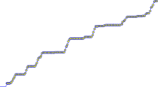
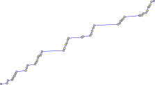

Reduce points density
Reduce points density
Sometimes charts have so many points that drawing of them is very highweight. The solution is to reduce points density (to thinning them). Idea is simple: if there are too many samples per linear (of the output device) resolution.
There are different possible approaches: a filtering - it's a bad solution because peaks will be lost or some kind of approximation - thinning, which is better because peaks are saved:
Original chart and chart with reduced points density:


The algorithm in Python language:
def reduce_density(k, points): x0 = y0 = u0 = None last = None for i, (x, y, u) in enumerate(points): if i == 0: yield (x, y, u) x0, y0, u0 = x, y, u else: if abs(y - y0) < k: last = (x, y, u) continue else: x0, y0, u0 = x, y, u if last is not None: yield last yield (x, y, u) last = None if last is not None: yield last
points is the list/iterator of triplet: (x, y, physical_value). x, y - are coordinates
of the point, physical_value is the 0y value in some physical units which can be used
for a printing value near the chart point or something else. The idea is simple: enumerate
over the points and looking for a change of the value (y) greater than some coefficient
k (number of pixels of the output device) - while values change is less than k treat
them as a line (skip them with continue). But otherwise - treat it as a valuable point
and return it (with yield).
This algorithm allows to minimize drawing points number which will improve output performance and will decrease the size of the files with the points without to loose valuable points.